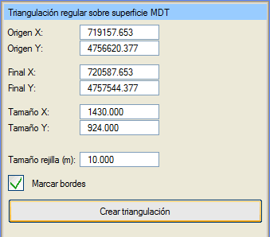
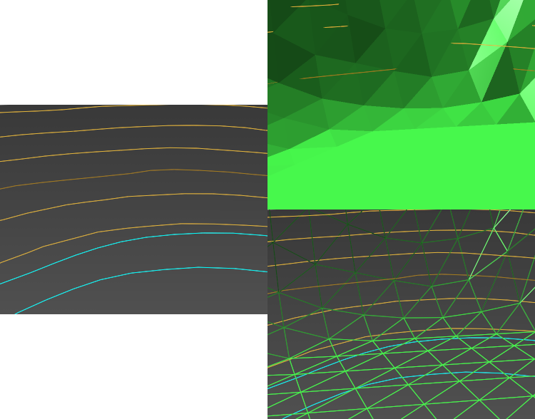

| |
|
Sayısal Arazi Modeli (SAM) Yüzeyinden Üçgenleme Oluşturma
|
|
Genel Bilgiler Bu menüde, Istram'da aktif olan Sayısal Arazi Modeli (SAM) yüzeyinden yola çıkarak düzenli üçgen ağları oluşturulabilir. Tüm seçenekler, SAM yüzeyinin tamamını içeren ve hemen hemen her grafik sisteminde gösterim için uygun sayıda üçgen üreten varsayılan değerlerle doldurulur.  Seçenekler Başlangıç (X, Y): SAM'ın minimum koordinatları. Bitiş (X, Y): SAM'ın maksimum koordinatları. Boyut (X,Y): Bitiş koordinatları - Başlangıç koordinatları; hem oluşturulacak geometrinin boyutunu bilmek hem de başlangıç noktasından itibaren sayılacak olan bu boyutu belirtmek için kullanılır. Izgara Boyutu (m): oluşturulan herhangi bir üçgenin iki köşe noktası arasındaki X veya Y mesafesi. Sınırları İşaretle: eğer seçilirse, üçgenlenmiş alanı çevreleyen bir çizgi oluşturulur. Üçgenleme Oluştur: önceden belirtilen parametrelerden yola çıkarak üçgen ağını oluşturur.  Oluşturulan nesne, SAM yüzeyinin adı ve ızgara boyutu ile isimlendirilir. Oluşturulan nesne, SAM yüzeyinin adı ve ızgara boyutu ile isimlendirilir. Resimde, harita verisinden oluşturulmuş bir SAM yüzeyi gösterilmektedir. |